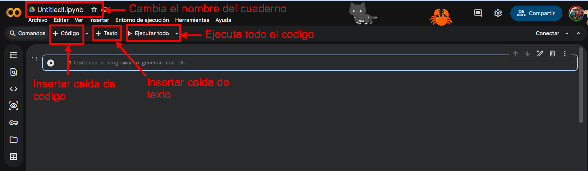
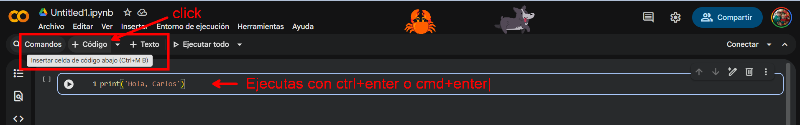
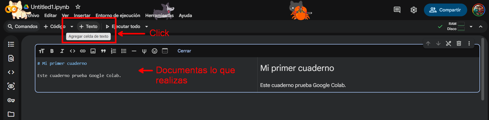
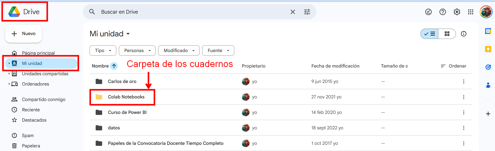
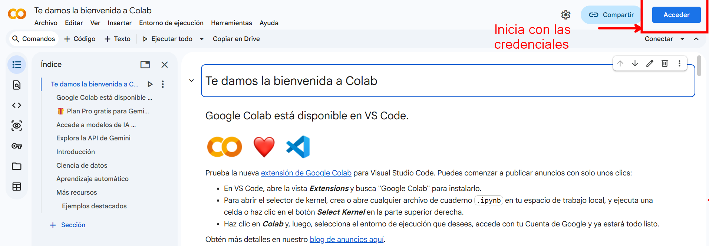
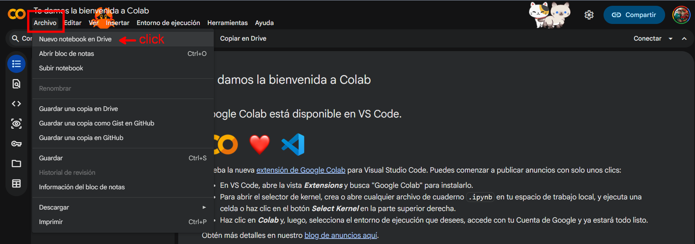

Módulo 1: Sistema de ecuaciones lineales#
1.1 Python#
1.1.1 Introducción a Python#
Python fue creado por Guido van Rossum, un programador holandés, a finales de los años 80 y principios de los 90. La primera versión de Python, la 0.9.0, fue lanzada en 1991. Guido van Rossum nombró el lenguaje en honor al grupo de comedia británico Monty Python, del cual era un gran fan.
Python se creó con el objetivo de ser un lenguaje fácil de leer y escribir, con una sintaxis clara y concisa. A lo largo de los años, ha evolucionado y ganado popularidad hasta convertirse en uno de los lenguajes de programación más utilizados en el mundo.
Python es un lenguaje de programación de alto nivel y de gran utilidad para la construcción de cualquier clase de soluciones informáticas.
Algunas características que tiene python:
Legibilidad: Python utiliza una sintaxis clara y sencilla, lo que facilita la lectura y comprensión del código. Utiliza indentación (espacios o tabulaciones) para delimitar bloques de código, lo que promueve un estilo de programación estructurado y legible.
Lenguaje interpretado: Python es un lenguaje interpretado, diferenciándolo de otros lenguajes de programación de alto nivel como Java o C++. Al ser un lenguaje interpretado, no necesita ser compilado para ejecutar las instrucciones escritas. Por lo tanto, su ejecución no implica llevarlo a código de máquina.
Código abierto, multiplataforma y multiparadigma: Python es un lenguaje de programación de código abierto; es decir, puede ser utilizado por cualquier persona gracias a las licencias gratuitas. Además, es multiplataforma, ya que puede ser adaptado para diferentes contextos y sistemas operativos. También, se aplica en muchos paradigmas de programación, tales como programación imperativa y la orientada a objetos. Así mismo, cuenta con una sintaxis y legibilidad que lo hacen muy sencillo y cercano al lenguaje natural.
Tipado dinámico: Python es un lenguaje de tipado dinámico. Esto quiere decir que, cuando se utiliza una variable, no es necesario describir de forma explícita el tipo de datos, ya que la variable se adecúa a la forma en que se utilice durante la escritura del programa. La variable puede tomar distintos tipos de valores durante su ejecución; por ejemplo, la variable var puede tomar cuatro tipos diferentes (
int,str,boolyfloat), como se ve en el ejemplo siguiente:
var_1 = 11; var_2 = 'Ciencia'; var_3 = True; var_4 = 4.57
type(var_1), type(var_2), type(var_3), type(var_4)
Bibliotecas y funciones: Python cuenta con una gran cantidad de bibliotecas y funciones que facilitan el trabajo de programación. Además, existe una gran comunidad que sirve de apoyo a los neófitos de Python y apoyan con información de las herramientas. Entre las bibliotecas, se destacan las utilizadas en la ciencia de datos:
Numpy,Pandas,MatplotlibyScikit-learn.Comunidad activa: Python cuenta con una comunidad de desarrolladores grande y activa que contribuye con bibliotecas,
frameworksy herramientas adicionales. Esto significa que encontrarás una gran cantidad de recursos y soporte disponibles.
Python se utiliza en una amplia gama de aplicaciones y dominios, algunos ejemplos son:
Desarrollo web: Python es ampliamente utilizado en el desarrollo web backend, con frameworks populares como Django y Flask.
Ciencia de datos: Python es el lenguaje preferido para el análisis de datos y la ciencia de datos debido a bibliotecas como
NumPy,Pandas,Matplotlib, entre otras.Inteligencia artificial y machine learning: Python es la elección principal para proyectos de IA y machine learning, gracias a bibliotecas como
TensorFlowyScikit-learn.Automatización de tareas: Python se puede utilizar para automatizar tareas repetitivas, como procesamiento de archivos,
web scrapingy pruebas de software.Desarrollo de juegos: Python se utiliza en el desarrollo de juegos simples, especialmente con bibliotecas como Pygame.
1.2 Google Colab#
1.2.1 ¿Qué es Google Colab?#
Google Colab (abreviatura de Colaboratory) es un entorno de Jupyter Notebook en la nube, desarrollado por Google Research. Te permite crear, ejecutar y compartir notebooks directamente desde el navegador, con una interfaz sencilla y sin necesidad de instalaciones ni configuración inicial.
Si te interesa la ciencia de datos con Python, Colab es una excelente opción para comenzar y avanzar rápido: puedes escribir y ejecutar código de inmediato, y además cuentas con muchas de las bibliotecas más usadas (por ejemplo, para análisis de datos y aprendizaje automático) ya preinstaladas.
1.2.2 ¿Por qué usar Google Colab?#
No requiere instalación: funciona en el navegador.
Configuración mínima: listo para programar desde el primer minuto.
Ecosistema de Python: incluye librerías populares preinstaladas.
Colaboración y compartición: facilita trabajar y compartir notebooks.
En las siguientes secciones, aprenderás más sobre las principales funciones de Google Colab y cómo aprovecharlo en tus proyectos.
1.2.3 ¿Por qué deberías considerar usar Google Colab?#
Además de ser un entorno que funciona directamente en el navegador (solo necesitas iniciar sesión con tu cuenta de Google), Google Colab ofrece varias funciones que lo hacen especialmente útil para la comunidad. Algunas de sus principales ventajas son:
Bibliotecas preinstaladas
Empieza a trabajar sin instalar nada: muchas librerías populares ya vienen listas para usarse.Intercambio y colaboración sencillos
Comparte tus cuadernos fácilmente y trabaja en equipo en tiempo real.Integración con GitHub
Puedes abrir notebooks desde repositorios, guardarlos y mantener tu trabajo conectado a tus proyectos.Trabajo con datos desde diversas fuentes
Importa datos desde Drive, archivos locales, enlaces web y otros servicios.Guardado automático y control de versiones
Tu progreso se guarda automáticamente y puedes mantener copias o versiones de tu cuaderno.Acceso a aceleradores de hardware como GPU y TPU
Ideal para tareas intensivas como machine learning o procesamiento acelerado.
1.2.4 Primer cuaderno en Google Colab#
La mejor manera de entender algo es probándolo uno mismo. Empecemos creando nuestro primer cuaderno de colaboración:
Para empezar los primero que debemos hacer es tener una cuenta de Google (Gmail). Y además inicia sesión con tu cuenta de Google.
Sigue los siguientes pasos para abrir el primer cuaderno
Después de crear un cuaderno nuevo, puedes renombrarlo con el nombre que prefieras. Ya estás listo para codificar en el proyecto. Google Colab es un entorno autónomo. Permite escribir código Python y texto (utilizando celdas Markdown) para incluir texto enriquecido y contenido multimedia, como se muestra a continuación. Esto facilita la lectura al añadir instrucciones paso a paso del proyecto.

Tu cuaderno está hecho de celdas. Hay dos tipos principales:
Celda de código: sirve para ejecutar Python

**Celda de texto (Markdown): Sirve para escribir explicaciones, títulos, listas, etc. Ideal para documentar lo que se hace

Estos cuadernos estarán almacenados en google drive

Otra forma de abrir un cuaderno en Colab es con el siguiente enlace colab.research.google.com. Veras la siguiente pantalla
Para escribir y ejecutar código, debes iniciar sesión con tus credenciales de Google. Este es el único paso necesario. No se requiere ninguna otra configuración.

Una vez que haya iniciado sesión en Colab, puede crear un nuevo cuaderno haciendo clic en “Archivo” → “Nuevo cuaderno”, como se muestra a continuación:

1.3 Uso de estructuras de datos básicas (vectores, listas, matrices, diccionarios)#
1.3.1 ¿Qué es NumPy?#
NumPy (Numerical Python) es una biblioteca fundamental para la computación científica en Python. Proporciona:
Arrays multidimensionales (ndarrays): Estructuras de datos eficientes para almacenar colecciones de números
Operaciones vectorizadas: Realizar operaciones en arrays sin necesidad de bucles explícitos
Funciones matemáticas: Operaciones sobre arrays como suma, resta, multiplicación, etc.
Álgebra lineal: Funciones para operaciones matriciales
Generador de números aleatorios: Crear datos aleatorios para análisis y simulaciones
NumPy es la base para muchas otras bibliotecas como Pandas, Matplotlib y Scikit-learn.
1.3.2 Instalación e Importación#
Para usar NumPy, primero debe estar instalado (generalmente viene pre-instalado en Google Colab):
# Importar NumPy - la forma estándar es usar 'np' como alias
import numpy as np
# Verificar la versión
print("Versión de NumPy:", np.__version__)
1.3.3 Listas#
Una lista es una secuencia ordenada de elementos, que pueden ser números, caracteres o cualquier otro tipo de dato.
Las características de una lista son:
Ordenadas: Los elementos mantienen su orden
Mutables: Se pueden modificar, agregar o eliminar elementos
Heterogéneas: Pueden contener elementos de diferentes tipos
Indexadas: Se accede a los elementos por su posición
Algunas operaciones comunes:
Acceso a elementos por índice:
# Crear un lista
lista = [10, 20, 30, 40, 50]
# Acceder al primer elemento (índice 0)
print(lista[0]) # Output: 10
# Acceder al tercer elemento (índice 2)
print(lista[2]) # Output: 30
Modificación de elementos:
# Crear una lista
lista = [10, 20, 30, 40, 50]
# Modificar el segundo elemento (índice 1)
lista[1] = 25
print(lista) # Output: [10, 25, 30, 40, 50]
1.3.4 Vector con NumPy#
En NumPy, un “vector” normalmente es un arreglo 1D (ndarray). Hay varias formas comunes de crearlo:
# Crear vector (array) desde lista
lista = [1, 2, 3, 4, 5]
arr1 = np.array(lista)
print("Array desde lista:", arr1)
print("Tipo:", type(arr1))
print("Dtype:", arr1.dtype)
Suma, resta, multiplicación, división de vectores, producto punto: En programación científica, estas operaciones a menudo se realizan utilizando bibliotecas como
NumPypara una mayor eficiencia y facilidad. Por ejemplo:
# importar biblioteca
import numpy as np
# Crear dos vectores (arrays de NumPy)
vector1 = np.array([1, 2, 3])
vector2 = np.array([4, 5, 6])
# Suma de vectores
suma = vector1 + vector2
print("Suma:", suma) # Output: [5 7 9]
# Resta de vectores
resta = vector1 - vector2
print("Resta:", resta) # Output: [-3 -3 -3]
# Multiplicación de vectores
multiplicacion = vector1 * vector2
print("Multiplicación:", multiplicacion) # Output: [ 4 10 18]
# División de vectores
division = vector1 / vector2
print("División:", division) # Output: [0.25 0.4 0.5 ]
# producto punto de vectores
producto_punto = np.dot(vector1, vector2) # también sirve: a @ b
print("Producto punto:", producto_punto)
# otra forma de producto punto de vectores
producto_punto = vector1 @ vector2 # también sirve: a @ b
print("Producto punto:",producto_punto)
Suma: [5 7 9]
Resta: [-3 -3 -3]
Multiplicación: [ 4 10 18]
División: [0.25 0.4 0.5 ]
Producto punto: 32
Producto punto: 32
Agregar elementos a un vector:
# Crear un vector
vector = [10, 20, 30]
# Agregar un nuevo elemento al final del vector
vector.append(40)
print(vector) # Output: [10, 20, 30, 40]
Eliminar elementos:
# crear vector (lista)
lista = [1, 2, 3, 4]
# remove(): Elimina la primera aparición de un valor en la lista.
lista.remove(2)
print(lista) # Output: [1, 3, 4]
# pop(): Elimina y devuelve el elemento en el índice especificado (por defecto, el último)
elemento = lista.pop()
print(elemento) # Output: 4
print(lista) # Output: [1, 2, 3]
elemento = lista.pop(1)
print(elemento) # Output: 2
print(lista) # Output: [1, 3]
Ordenar elementos:
# crear lista
lista = [4, 2, 3, 1]
# sort(): Ordena los elementos de la lista en su lugar.
lista.sort()
print(lista) # Output: [1, 2, 3, 4]
# sorted(): Devuelve una nueva lista ordenada sin modificar la original.
lista_ordenada = sorted(lista)
print(lista_ordenada) # Output: [1, 2, 3, 4]
Acceder a elementos por índice:
# crear lista
lista = ['a', 'b', 'c', 'd']
print(lista[0])
Modificar elementos:
# crear lista
lista = [10, 20, 30, 40]
lista[1] = 25
print(lista) # Output: [10, 25, 30, 40]
Ejercicio 1
Crea en Python dos vectores:
\(\mathbf{a} = (3,\,-1)\)
\(\mathbf{b} = (2,\,4)\)
Calcula \(\mathbf{a} + \mathbf{b}\).
Imprime el resultado como arreglo de NumPy.
Verifica el resultado manualmente (en un comentario).
Ejercicio 2
Crea en Python:
\(\mathbf{u} = (-2,\,5,\,1)\)
\(\mathbf{v} = (4,\,-3,\,7)\)
Calcula \(\mathbf{u} + \mathbf{v}\).
Imprime el vector resultante.
Ejercicio 3
Crea en Python:
\(\mathbf{p} = (6,\,2)\)
\(\mathbf{q} = (-1,\,5)\)
Calcula \(\mathbf{p} - \mathbf{q}\).
Calcula \(\mathbf{q} - \mathbf{p}\).
Compara los resultados y escribe una conclusión corta (1–2 líneas).
Ejercicio 4
Crea en Python:
\(\mathbf{m} = (10,\,-4,\,3)\)
\(\mathbf{n} = (2,\,1,\,-8)\)
Calcula \(\mathbf{m} - \mathbf{n}\).
Imprime el resultado.
Ejercicio 5
Crea el vector:
\(\mathbf{x} = (5,\,-2)\)
Calcula \(3\mathbf{x}\).
Calcula \(-2\mathbf{x}\).
¿Qué cambia en el vector cuando el escalar es negativo? (escribe 1–2 líneas).
Ejercicio 6
Crea el vector:
\(\mathbf{y} = (-1,\,0,\,4)\)
Calcula \(0.5\mathbf{y}\).
Calcula \(4\mathbf{y}\).
Imprime ambos resultados.
Ejercicio 7
Crea en Python:
\(\mathbf{a} = (1,\,3)\)
\(\mathbf{b} = (4,\,-2)\)
Calcula \(\mathbf{a}\cdot\mathbf{b}\) usando
np.dot(a, b).Calcula \(\mathbf{a}\cdot\mathbf{b}\) usando el operador
@.Verifica que ambos dan el mismo resultado.
Ejercicio 8
Crea en Python:
\(\mathbf{u} = (2,\,-1,\,3)\)
\(\mathbf{v} = (-4,\,5,\,2)\)
Calcula \(\mathbf{u}\cdot\mathbf{v}\).
Interpreta el signo del resultado (positivo, negativo o cero) con una frase corta.
Ejercicio 9
Crea en Python:
\(\mathbf{r} = (2,\,-3)\)
\(\mathbf{s} = (-1,\,4)\)
Calcula el vector:
Implementa la operación en NumPy.
Imprime \(\mathbf{t}\).
Ejercicio 10
Crea en Python:
\(\mathbf{a} = (3,\,0)\)
\(\mathbf{b} = (0,\,5)\)
Calcula \(\mathbf{a}\cdot\mathbf{b}\).
Usa el resultado para decidir si son perpendiculares (ortogonales).
Escribe tu conclusión en una línea.
1.3.5 Tuplas#
Las tuplas son similares a las listas, pero inmutables (no se pueden modificar una vez creadas). Se utilizan para almacenar colecciones de datos que no deben cambiar.
Características:
Ordenadas: Mantienen el orden de los elementos
Inmutables: No se pueden modificar, agregar o eliminar elementos
Se definen con paréntesis:
(elemento1, elemento2, ...)
# Crear tuplas
tupla_numeros = (1, 2, 3, 4, 5)
tupla_vacia = ()
tupla_un_elemento = (42,) # Nota la coma
print("Tupla de números:", tupla_numeros)
print("Tupla vacía:", tupla_vacia)
print("Tupla de un elemento:", tupla_un_elemento)
# Acceso a elementos (igual que listas)
print("\nPrimer elemento:", tupla_numeros[0])
print("Últimos dos elementos:", tupla_numeros[-2:])
# Las tuplas son inmutables - esto causaría error si lo ejecutáramos:
# tupla_numeros[0] = 10 # ❌ TypeError: 'tuple' object does not support item assignment
# Pero podemos usar funciones como count() y index()
tupla_mixed = (1, 2, 3, 2, 1, 2)
print("\nCuántas veces aparece 2:", tupla_mixed.count(2))
print("Índice de la primera aparición de 3:", tupla_mixed.index(3))
1.3.6 Conjuntos#
Los conjuntos son colecciones de elementos únicos y sin orden. Son útiles para operaciones matemáticas como unión, intersección y diferencia.
Características:
Elementos únicos: No pueden haber duplicados
Sin orden: No tienen posiciones específicas
Mutables: Se pueden agregar o eliminar elementos
Se definen con llaves:
{elemento1, elemento2, ...}oset()
# Crear conjuntos
conjunto = {1, 2, 3, 4, 5}
conjunto_duplicados = {1, 1, 2, 2, 3} # Los duplicados se eliminan automáticamente
conjunto_vacio = set() # Se usa set(), no {}
print("Conjunto:", conjunto)
print("Conjunto desde lista con duplicados:", conjunto_duplicados)
print("Conjunto vacío:", conjunto_vacio)
# Agregar y remover elementos
conjunto.add(6)
conjunto.discard(3)
print("\nDespués de agregar 6 y remover 3:", conjunto)
# Operaciones de conjuntos
A = {1, 2, 3, 4}
B = {3, 4, 5, 6}
print("\nConjunto A:", A)
print("Conjunto B:", B)
print("Unión (A | B):", A | B)
print("Intersección (A & B):", A & B)
print("Diferencia (A - B):", A - B)
print("Diferencia simétrica (A ^ B):", A ^ B)
# Verificar pertenencia
print("\n¿2 está en A?:", 2 in A)
print("¿5 está en A?:", 5 in A)
1.3.7 Matrices#
Las matrices son arreglos rectangulares de elementos, es decir,
donde \(m\) es el número de filas y \(n\) es el número de columnas
En Python, las matrices pueden ser implementadas usando listas de listas o utilizando bibliotecas como NumPy, que proporciona una funcionalidad más eficiente para el manejo de matrices.
Las matrices poseen varias características que las hacen útiles para muchas aplicaciones, especialmente en matemáticas, ciencia de datos, y programación científica:
Dimensionalidad: Las matrices son bidimensionales, organizadas en filas y columnas. Además, se pueden extender a más dimensiones, formando tensores en contextos más avanzados.
Homogeneidad: Los elementos de una matriz deben ser del mismo tipo (e.g., todos enteros, todos flotantes).
Indexación: Los elementos de una matriz se acceden utilizando un par de índices: uno para la fila y otro para la columna.
Mutabilidad: Las matrices pueden ser modificadas después de su creación, permitiendo la actualización de elementos individuales o la reasignación de filas y columnas completas.
Operaciones Matemáticas: Las matrices admiten una variedad de operaciones matemáticas, tales como suma, resta, multiplicación (tanto elemento a elemento como producto matricial), y transposición. Estas operaciones son esenciales para cálculos algebraicos lineales y análisis numérico.
Transposición: La transposición de una matriz implica intercambiar sus filas por columnas, y es una operación comúnmente utilizada en diversas aplicaciones matemáticas y científicas.
Determinante y Rango: Para matrices cuadradas (mismo número de filas y columnas), se pueden calcular propiedades como el determinante y el rango, que tienen importantes aplicaciones en álgebra lineal.
import numpy as np
# Creacion de matriz
matriz = np.array([
[1, 2, 3],
[4, 5, 6],
[7, 8, 9]
], dtype=float)
matriz
Acceso a elementos por filas y columnas:
# Acceder al elemento en la primera fila, segunda columna
matriz[0][1]
# Acceder al elemento en la tercera fila, primera columna
matriz[2][0]
# Acceder a la segunda columna
matriz[:, 1]
# Acceder a la segunda fila
fila = matriz[1]
Hagamos un ejemplo de sistema de ecuaciones lineales
Ejemplo
Resolver el siguiente sistema de ecuaciones lineales:
Solución.
Primero debemos convertir el SEL en una matriz aumentada y de alli, obtener la matriz de coeficientes y terminos independientes:
La matriz aumentada es:
La matriz de coeficientes es:
El vector de términos independientes es:
Ahora, escribamos las matrices de coeficientes y el vector de términos independientes con python usando NumPy
# Matriz de coeficientes A y vector b
A = np.array([[ 2, 1, 1],
[-1, 2, 2],
[ 1, -1, -3]], dtype=float)
b = np.array([3, 1, -6], dtype=float)
# Resolver Ax = b
x = np.linalg.solve(A, b)
print("Solución [x, y, z]:", x)
Solución [x, y, z]: [ 1. -2. 3.]
Nota
Estos ejercicios deben realizarse con la matriz de coeficiente cuadrada.
Ejercicio 1
Determina la solución del sistema (puedes hacerlo con numpy.linalg.solve o analizando si hay infinitas soluciones):
Escribe la matriz (A) y el vector (\mathbf{b}).
Resuelve el sistema en Python.
Verifica sustituyendo la solución en las ecuaciones.
Ejercicio 2
Resuelve el sistema homogéneo:
Construye (A) y (\mathbf{b}=\mathbf{0}).
Usa Python para encontrar la solución.
¿La solución es única o hay infinitas? Explica brevemente.
Ejercicio 3
Resuelve el sistema:
Define (A) y (\mathbf{b}).
Resuelve con
np.linalg.solve(A, b).Comprueba el resultado.
Ejercicio 4
Resuelve el sistema:
Escribe la matriz aumentada.
Resuelve en Python.
Verifica la solución.
Ejercicio 5
Resuelve el sistema:
Construye (A) y (\mathbf{b}).
Resuelve con
NumPy.Comprueba que tu solución satisface las 4 ecuaciones.
1.3.8 Diccionarios#
Los diccionarios son una estructura de datos que almacena pares de clave-valor. Cada clave es única y se utiliza para acceder a su valor asociado. Los diccionarios son útiles cuando se necesita un mapeo entre elementos, como por ejemplo, asociar nombres con números de teléfono.
Las características de los diccionarios son:
Clave-Valor: Cada elemento en un diccionario es un par clave-valor. Las claves deben ser únicas y de un tipo de datos inmutable (como cadenas, números o tuplas), mientras que los valores pueden ser de cualquier tipo de datos, incluso listas o otros diccionarios.
Acceso Rápido: Los diccionarios permiten un acceso rápido a los valores mediante sus claves, lo que los hace muy eficientes para búsquedas y actualizaciones.
No Ordenado: A partir de Python 3.7, mantienen el orden de inserción, pero esto no es algo en lo que debas confiar en versiones anteriores.
Mutable: Los diccionarios pueden ser modificados después de su creación, permitiendo agregar, eliminar o cambiar pares clave-valor.
Flexible: Los valores en un diccionario pueden ser de cualquier tipo de datos, y los diccionarios pueden incluso anidarse dentro de otros diccionarios.:
Algunos ejemplos de diccionarios:
Creación de un diccionarios:
# Crear un diccionario vacío
mi_diccionario = {}
# Crear un diccionario con algunos pares clave-valor
estudiante = {
"nombre": "Juan",
"edad": 21,
"carrera": "Ingeniería"
}
print(estudiante)
Acceso a un valor:
# Acceder al valor asociado con la clave "nombre"
nombre = estudiante["nombre"]
print(nombre)
Modificar un valor:
# Cambiar el valor asociado con la clave "edad"
estudiante["edad"] = 22
print(estudiante)
Agregar un nuevo par clave-valor:
# Agregar una nueva clave "promedio" con su valor
estudiante["promedio"] = 4.5
print(estudiante)
Eliminar un par clave-valor:
# Eliminar la clave "carrera" y su valor asociado
del estudiante["carrera"]
print(estudiante)
Recorrer un diccionario:
# Recorrer las claves y valores de un diccionario
for clave, valor in estudiante.items():
print(f"{clave}: {valor}")
Comprobar si una clave existe:
if "nombre" in estudiante:
print("El nombre del estudiante es:", estudiante["nombre"])
Diccionarios anidados:
# Crear un diccionario anidado
clases = {
"Matemáticas": {
"Profesor": "Sr. Pérez",
"Horario": "8:00 - 10:00"
},
"Historia": {
"Profesor": "Sra. García",
"Horario": "10:00 - 12:00"
}
}
# Acceder a datos en un diccionario anidado
print(clases["Matemáticas"]["Profesor"])